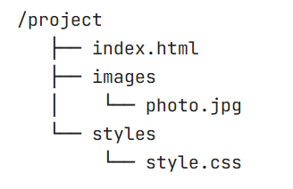

На следующем шаге я расскажу, как правильно настраивать путь к нужному файлу при подключении CSS-файлов или изображений.
В HTML и веб-разработке пути (paths) используются для указания местоположения файлов, таких как изображения, стили, скрипты или другие HTML-документы. Пути могут быть абсолютными или относительными. Давайте разберем, что это значит и как они работают.
Абсолютный путь указывает полный адрес файла в интернете или на компьютере. Он начинается с корневой директории или с протокола (например, http://, https://, или file://).
<img src="https://example.com/images/photo.jpg" alt="Пример изображения">
Здесь указан полный URL-адрес изображения.
<img src="file:///C:/Users/Username/Pictures/photo.jpg" alt="Пример изображения">
Здесь указан полный путь к файлу на диске.
Особенности:
Относительный путь указывает местоположение файла относительно текущего документа. Он не начинается с корневой директории или протокола.
Примеры:
Предположим, у вас есть такая структура папок:

<img src="images/photo.jpg" alt="Пример изображения">
Здесь images/photo.jpg — это путь к изображению относительно текущего файла index.html.
Если бы index.html находился в папке pages, а изображение — в папке images, то путь выглядел бы так:
<img src="../images/photo.jpg" alt="Пример изображения">
Здесь ../ указывает на родительскую папку, а images/photo.jpg — путь к изображению.
Если бы index.html находился в корневой папке, а стили — в папке styles, то путь к CSS-файлу выглядел бы так:
<link rel="stylesheet" href="styles/style.css">
Особенности: